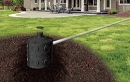

About this Tool
To help address problems with flooding and combined sewage overflows (CSO), South Bend is mandating that all downspouts be disconnected from the sewer system by April 2021. Additionally, a stormwater tax will be enacted. This tax will be $2 per Equivalent Residential Unit (ERU) per month for residential properties, and $5 per ERU per month for commerical properties. However, if a property incorporates green infrastructure, a portion of this tax will be negated. This tool is designed for property owners to calculate what they will face per year in taxes, and offer green infrastructure solutions with this in mind. Simply find your property on the map, draw a perimeter around the specified area, answer the questions, and review your options!
What is Green Infrastructure?
Green infrastructure is a general term for measures that use plants, soil systems, and permeable substrates to help reduce the amount of runoff that flows into sewer systems. When land is increasingly replaced with parking lots and new housing developments, the area able to absorb rainfall is greatly reduced, and the sewer system is forced to handle the excess runoff. South Bend, like many older US cities, has a combined sewer system, so stormwater and raw sewage are contained in the same pipes. During rain events, this often leads to overflows, and the treatment facilities are forced to release raw sewage into the St. Joseph River, even as the system backs up and neighborhoods flood. By greatly reducing the amount of runoff into the system, green infrastructure reduces these raw sewage overflows, mitigates localized flooding, and provides many other benefits. Learn more about green infrastructure here, the environmental benefits here, and about combined sewer overflows here.
Rain Gardens
A rain garden is a landscape bed that allows rain water to be absorbed into its multiple layers to reduce the amount of runoff that makes its way into the sewer system. They consist of beds of porous soil along with added vegetation designed to absorb and store water before it is drained back into the groundwater system. Rain gardens are estimated to remove 90% of nutrients and chemicals and up to 80% of sediments from runoff. The cost of rain gardens vary based on the selection of soil, plants, and decorative additions. Smaller plants are more cost effective, but require more time to grow to full size. It is recomended that native plants are used as they meet the USDA hardiness zone.

For more information visit: susdrain.org lakesuperiorstreams.org
Tree Boxes
A tree box filter is a stormwater management system similar to a rain garden except for the fact that it consists of a poured concrete outer shell that is either free draining below or a closed unit that drains into an external source. Tree boxes are usually seen in urban areas along curbs and sidewalks. They can be retrofitted into existing streetscapes, most often along the curbline of adjacent roadways. In general, tree boxes are very versatile -- they can fit a wide variety of sizes and streetscape styles. Additionally, they help to filter the water before discharging it. Tree boxes can be pre-cast for easy installation/maintenance. Tree boxes do have a limited volume capacity. Additionally, they require regular maintenance to remove debris, keep the plants pruned, replace mulch, etc. The base should require minimal repair, but the plants inside it will most likely need replacement every 5-10 years. The drainage rates and compaction of the tree box depend on the soil type selected. For reference, the average size of a tree box is 7’x7’.
For more information visit:
njaes.rutgers.edu/
iowastormwater.org
Dry Wells
Dry wells are open drainage structures that allow stormwater to infiltrate directly back into the soil. These porous-walled chambers allow for stormwater collected in roof gutters to slowly drain back into the ground. Traditional dry wells are constructed as pits filled with free-draining gravel. More complex dry wells are often made of concrete and connected to larger systems such as storm drains. Dry wells can be used in conjunction with sediment collection units or in areas where there is not heavy debris. Sediment can build up in dry wells, so additional filtration may be necessary. Dry wells can be used on small sites or can be used to increase capacity in larger areas. These wells provide an opportunity for urban areas to store and slowly release excess runoff without putting it directly into the sewer system. Dry wells only filter water; they offer no additional treatment. If the well is placed too close to the ground surface, freezing water may cause damage to the well. However, dry wells should not be installed too deep into the ground in order to avoid the water table. Annual cleaning and inspection will be required. The overall cost of the dry well will depend on the size, depth, and number of units/valves. Additional piping could increase the cost, depending on the location of the well.
 For more information visit:
South Bend Green Infrastructure Plan
Dry Wells Flyer
AGI Dry Wells
Dry Wells Fact Sheet
Porous Pavement
Porous pavement offers the structural stability of pavement while allowing rainwater to drain into the soil. Porous pavement surfaces take different forms, including permeable paver stones, porous asphalt, porous concrete, and synthetic turf. This option is not recommended for areas in which heavy pollutants or sediments could be exposed to the soil, such as industrial sites. Permeable pavement is susceptible to shifting and cracking if the slope is too steep or the surface is exposed to high vehicular traffic. Porous pavement is successful in areas such as playgrounds, athletic complexes, parking lots, bike trails, and driveways.

For more information visit:
South Bend Green Infrastructure Plan
Porous Pavement
Grass Pavers
Grass pavers create porous, lawn-like spaces that can also support vehicular traffic. These pavers are a visually appealing form of permeable pavement. Grass pavers are typically seen in driveways and overflow parking facilities, but can be used in nearly any setting that does not regularly see high amounts of traffic. The open structure of the paver is designed to capture stormwater runoff while the turf/grass works to slowly absorb the water back into the ground. Grass pavers filter pollutants from runoff water and improve water quality. Maintenance includes removal of sediment, mowing/watering/weeding the grass, and repairing cracks.
For more information visit: South Bend Green Infrastructure Plan
Permeable Unit Pavers
Permeable unit pavers are a form of porous concrete designed to allow stormwater to filter through the layer and back into the ground. Permeable unit pavers provide great options for stormwater detention, particularly in urban areas. Each paver can be designed to incorporate patterns and different color combinations. Sections of parking or public areas, such as bike trails and plazas, can be easily converted into permeable unit pavers. A wide variety of materials can be used to construct unique and site specific pavers. Permeable unit pavers can be scaled to fit a multitude of locations and can also be used to support some weight. These pavers are best used for walkways, plazas, service drives, parking areas, and loading docks. Permeable unit pavers are similar to porous pavement but cannot hold as much weight. Permeable unit pavers do, however, offer more design flexibility in comparison to porous pavement. Permeable unit pavers do not efficiently filter runoff water when placed on poor draining soils. Because each unit is designed differently, the required cleaning and durability vary for each unit. Permeable unit pavers can clog easily if not cleaned regularly causing the pores in the pavement to not filter water as effectively. Vacuum cleaning is recommended 2-4 times per year. Additional costs may be required to occasionally repair/replace pieces of concrete.

For more information visit:
South Bend Green Infrastructure Plan
Permeable Pavers
Infiltration Chamber
Infiltration chambers are buried stormwater detention structures with permeable bottoms designed to hold runoff until it can slowly enter back into the ground. These structures can be placed under lawns or pavement, allowing for usable above-ground space compared to other water detention structures. These chambers are typically made of concrete or HDPE (High Density Polyethylene) materials that will provide a strong and rigid structure. These chambers can be incorporated into new developments and placed under pavement/parking lots. They also provide open space and opportunity for natural vegetation. Infiltration chambers are most often large enough to contain flood water as well as improve stormwater quality. Large systems require more area and depth, and, therefore, require a site with more utilities as well as other factors. Maintenance will be required, and a lack of proper maintenance can create a breeding ground for mosquitoes. Infiltration chambers may have an ecological impact on existing wetlands and habitats. Each chamber structure should be designed to hold 120% of the water quality volume to account for sedimentation and should not be installed within 24’’ of a high water table.
For more information visit: South Bend Green Infrastructure Plan
Surface Detention
Surface detention systems store stormwater runoff above ground while providing a chance for sediments and pollutants to settle out. A portion of the stored water slowly filters back into the soil, while other designed outlets collect the water to drain it into adjacent systems, minimizing the flow of discharge following each rain event. The flow of water captured depends on the size of the basin. The flow infiltrated depends on the permeability of the soil. Surface detention systems are designed to be site specific. Systems can be incorporated into new developments and provide open space for natural vegetation. These systems remove many types of pollutants before they can enter the sewage system. Surface detention systems are most often large enough to contain flood water as well. Larger systems require more area and depth, and therefore, require a site with more utilities as well as other factors. Maintenance will be required, and a lack of proper maintenance can create a breeding ground for mosquitoes. Occasional maintenance may include erosion checks, debris removal, revegetation, and removal of sediment buildup. Infiltration chambers may have an ecological impact on existing wetlands and habitats. Each system should be designed to hold 120% of the water quality volume to account for sedimentation with vegetation used to slow water flow.
For more information visit:
South Bend Green Infrastructure Plan
Surface Detention Pond
Bioretention
Bioretention systems remove sediment and other contaminants from stormwater runoff through the use of vegetation with soil acting as a natural filtration system. These systems are able to remove large amounts of heavy metals, phosphorus, and fine sediments from runoff. Bioretention systems store a portion of runoff from each rain event to be used by the vegetation within the system, thus reducing the amount of runoff that enters into impervious areas. This stored water is either filtered through the soil or evaporated back into the air. These systems require minimal engineering expertise compared to other GSI options. Maintenance activities should be performed monthly to remove debris and sediment (to prevent clogging), as well as to prune and weed vegetation. Additionally, the soil will need to be replaced every 3 to 5 years. Additional work may need to be done on the soil if it drains slowly — this could indicate a clog or the need for an underdrain. This affects the water flow captured by the system because the flow rate depends on the permeability of the soil and the type and quantity of vegetation used. Bioretention systems enhance the overall aesthetic with additional vegetation that provides shade and wind/noise buffering. Bioretention systems require larger implementation areas, roughly 25' width or greater. These systems cannot be implemented on steep or unstable slopes where the water table is within 6' of the surface. Installation costs depend on the number of trees, shrubs, perennials, and soil depth proposed.
For more information visit:
South Bend Green Infrastructure Plan
Bioretention Areas
Bioretention Basins
Infiltration Basin
Infiltration basins are specific surface ponds used to capture and treat runoff on drainage sites between roughly 5 to 50 acres. Infiltration basins are typically dry except for immediately following larger rain events. These basins are heavily vegetated to mitigate toxins and pollutants. The flow of water captured depends on the permeability of the soils. Each basin is designed to be site specific. Infiltration basins provide groundwater recharge and reduce overall runoff volume within adjacent waterways. These basins remove particulates and some soluble pollutants from runoff. Infiltration basins require a large area of land to be implemented and are not recommended for long-term use due to high maintenance and clogging. These basins are not suitable on steep slopes or where high amounts of sediment are deposited. Basins should not be constructed within 100 feet of drinking wells as they may accumulate pollutants to toxic levels. Monthly inspections will be necessary to remove debris/sediment build up. Vegetation and soil will require occasional upkeep and replacement. The basin should be installed at least 10 feet above the water table.
For more information visit:
South Bend Green Infrastructure Plan
Infiltration Basins
Infiltration Trench
Infiltration trenches are linear pits that provide a storage area for stormwater runoff to be temporarily held before it can infiltrate the soil or be carried to an outflow facility by an underdrain. These trenches can both capture volumes of stormwater and improve the water quality. Infiltration trenches are quite versatile as they can be designed to fit different locations and sites. These trenches divert runoff, which minimizes the impact on surrounding areas. These trenches can be implemented into uncommonly used areas, such as road medians. Infiltration trenches require good soil with adequate filtration. This system is only practical for smaller sites (5 to 10 acres). Infiltration trenches cannot be placed close to the water table or within 100 feet of a drinking well due to pollutant build up. These trenches are not suitable for areas with steep slopes, as sediment build-up can clog the system. A larger surface area for the trench will help to reduce the risk of clogging. Regular inspections should be performed to remove debris and sediment build-up. Inlet and outlet structures should be examined occasionally, checking for erosion or damage. During heavy rain events, it is important to keep an eye on the system to ensure proper drainage is occurring.
For more information visit:
South Bend Green Infrastructure Plan
Susdrain Infiltration Trenches
Infiltration Trenches
Vegetative Swale
Vegetative swales, also known as bioswales, are shallow channels intended to carry stormwater runoff where pollutants can be reduced using herbaceous plant material and soil filtration. These swales are primarily used to transport runoff but can also assist in the process of pre-treatment. The flow of water captured depends on the permeability of the soils as well as the type and quantity of vegetation used. Each swale is designed to be site specific. Vegetative swales have relatively easy design, installation, and maintenance in comparison to other GSI options. Swales can be easily incorporated into normal site developments. Vegetation provides an appealing appearance as well as overall lower costs. Vegetative swales do not hold large volumes of water well. Dry periods will cause vegetation to need additional watering. Erosion and channelization may become long-term issues. Vegetative swales are only effective where soils with good drainage and high infiltration are readily available. Swales may provide a breeding ground for mosquitoes. Regular inspections are required to remove debris or sediment build-up. These swales will require regular but minimal mowing, pruning, and maintenance as well as occasional vegetation replacement. Installation costs vary based on the size and density of the plantings as well as grading.

For more information visit:
South Bend Green Infrastructure Plan
Vegetative Swales
Vegetative Filter Strip
Vegetative filter strips are areas of planted or indigenous vegetation located between a pollutant-source area and a surface-water body that receives runoff. They are often referred to as "buffer strips”. These strips are urban wildlife habitats that help prevent erosion along stream banks. Filter strips slow the velocity of runoff and provide a slight reduction in runoff volume and watershed imperviousness; however, they are not designed to treat high velocity runoff or provide large volumes of storage. They are also not very effective at removing pollutants. The water flow captured depends on the permeability of the soils. Filter strips require shallow slopes and permeable subsoils, as well as large amounts of land. Regular maintenance and inspection is required to remove debris and sediment, mow and weed the turf, and reseed/replace grass and other vegetation; however, these maintenance costs will likely overlap with regular landscape maintenance costs. For vegetative filter strips, vegetation with dense root structures should be used to prevent erosion, stabilize soil, and provide water absorption. Additionally, these strips should be installed in a way that would allow water to disperse evenly.

For more information visit: Parking Lot Filter Strips
Green Roof
A green roof is an extension of the roof of a building that has been partially or completely covered with vegetation and a waterproofing membrane. Green roofs are made from layered mediums that allow stormwater to run through the layers without causing damage to the building. Layers could include a root growth prevention layer, drainage system, waterproofing membrane, filtering layer, growing medium, and vegetation. These layers can potentially add extra insulation to the building. When implementing a green roof, other factors to consider include the height of the building, slope of the roof, amount of sunlight and wind, and the structural weightload of the roof. The building must be able to support the added weight (the layers can potentially add between 20-100 lbs. per square foot on top of the weight of the roof). It is also important to consider how excess water will be handled as well as which vegetation to select. The selected vegetation can be used for alternative purposes such as gardening or insect repellant. This vegetation will require regular maintenance, so roof access would need to be easily accessible. Green roofs have relatively higher installation and maintenance costs and may need replacement every 30-50 years based upon inspection.

For more information visit: Green Roofs More About Green Roofs More About Green Roofs
Underground Detention
Underground detention systems are designed to capture runoff during rain events and distribute it into adjacent storm sewers at a controlled rate. The purpose is to reduce the volume of water that enters the storm sewer and spread its release out over an extended period of time, reducing the stress on existing systems. These systems can be placed beneath unused land or beneath active structures, such as lawns, parking facilities, and roadways; however, underground detention is difficult to retrofit into existing infrastructure. Underground detention systems can capture extremely large volumes of water, if necessary. Relative to other options, costs to maintain the pre-treatment facilities are relatively inexpensive. The initial installation of underground detention systems can be somewhat expensive. This system does not involve any treatment of the water before introducing it into the storm sewers. Regular maintenance will only need to be done when sediment needs to be removed; however, the structure itself should be regularly inspected for deterioration with the inlets and outlets routinely inspected for erosion. Thus, the system should have surface access.

For more information visit: Underground Detention & Retention Underground Storage
Constructed Wetland
Wetland retention systems apply the natural benefits of wetlands to treat stormwater runoff and provide a natural habitat for animals. As excess runoff enters the wetlands, a series of pools collect and slow the water, allowing sediment and pollutants to settle out into the soil. Through their roots, plants absorb many of these pollutants, and bacteria and microbes within the soil help break down harmful chemicals, cleaning and filtering the water in the process. Having multiple pool levels can increase the effectiveness of separating pollutants. These systems are great for larger, regional areas because they need lots of space to function properly. Wetlands cannot be built on steep slopes or in populous areas. This is, however, a viable option for areas with a high water table. In fact, a continuous water source is required for a healthy wetland — so a high water table can be beneficial. Regular maintenance is required: vegetation should be replaced periodically, sediment removal is frequently required (particularly around spillways/outlets), embankments should be checked for cracks and erosion, and water depths should be checked annually. Wetlands can attract and become a breeding ground for mosquitoes.

For more information visit: Constructed Wetlands
Wet Pond
Wet ponds are permanent pool structures intended to capture sediment, organic nutrients, and metals from stormwater runoff. Wet ponds are also referred to as retention ponds. Having a steady amount of water stored within the pond allows for natural biological functions to occur that reduce soluble nutrients. Thus, when filled properly, the pond systems are very efficient at removing pollutants. Wet ponds are able to hold large volumes of water, so they are good for dealing with widespread drainage areas. Due to their size, wet ponds are not feasible on small sites (less than 10 acres), nor can they be placed on steep or unstable slopes. Maintenance activities, such as minor debris removal, should be performed at least monthly. Large-scale debris removal should occur every 5 to 10 years. Inspection of valves, pumps, fencing, mechanical components, outlets, and inlet pipes should be performed routinely to ensure that there is no obstruction or deterioration. Additionally, it is important to ensure that banks remain vegetated, in order to increase stability and minimize erosion. Wet ponds may become regulated resources by IDEM (Indiana Department of Environmental Management) or IDNR (Indiana Department of Natural Resources), depending on size and location. Geothermal energy systems can be added to wet ponds in order to save money on energy and be more carbon-friendly to the environment.

For more information visit: Wet Ponds
Rain Barrels
Rain barrels and cisterns are closed tank storage systems that are designed to collect stormwater runoff from buildings/roofs before it can enter into the sewage system11. The collected water can then be repurposed for garden irrigation, car washing, lawn care, etc.; otherwise, the water can be slowly released back into local soil once the source of the water (ie. the storm/rain) has subsided. Cisterns are larger than rain barrels, thus holding more runoff. These systems can be placed above or below ground. Additionally, rain barrels are readily available and easy to find, which can make them more feasible than other options — in fact, rain barrels can be installed by the owner, rather than requiring professional help. Rain barrels and cisterns must be disconnected during winter months. On top of that, they must be regularly drained, particularly before heavy rain events, so that there is space for incoming rain. Other maintenance includes annual cleanings and inspections. These systems simply store the water — they do not provide any treatment to it. Another consideration is that the system would be privately owned/controlled, but the owner could coordinate within the community to find opportunities for discharging the water (possibly even for profit, such as selling the collected water to help others water their lawn).

For more information visit: Purchase Rain Barrel Rainwater Cisterns Rain Barrels